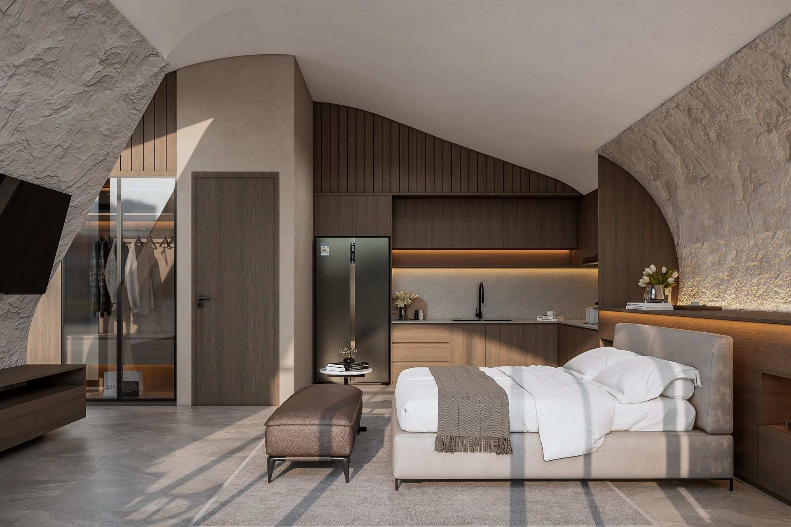
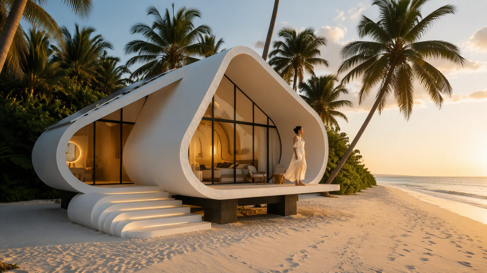
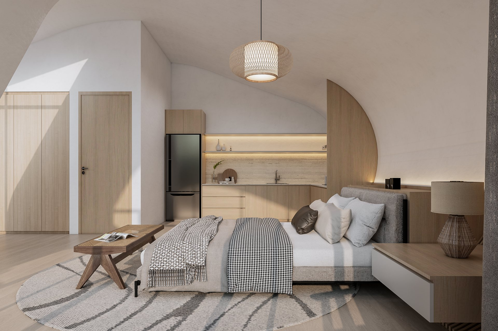

Palette 01
Modern Mediterranean
Soft neutrals, sculptural forms, and a light, coastal sensibility.
Signature architecture · Development possibilities
Explore a distinctive architectural system, try on its material worlds, and imagine a collection at the scale of your next development.

A sculpted shell. A continuous living space. A consistent design language from one villa to an entire collection.
Cinematic walkthrough01 / Make it yours
Compare the atmosphere of each palette. Save a preference to include in your project review.

Soft neutrals, sculptural forms, and a light, coastal sensibility.

Natural textures, warm timber, and a grounded connection to the landscape.
No palette selected yet.
Signature shell / Finish studio
Rotate the concept pod and try exterior finishes on its curved shell. Explore the finish on the concept shell, then open the rendered tour.
Exterior finish
A soft mineral tone with a matte surface.
Concept finish simulation on a simplified 3D shell. Color and texture are indicative.
Walk the architecture
Follow the rendered journey from the veranda into the suite, then explore the spaces and compare the two material worlds.
Rendered scenes · Cinematic transitions · Two palettes
02 / Ambiance studio
One architecture, different moods. Explore the same space with two palettes and three lighting treatments.
Atmosphere previews use visual lighting treatments on concept imagery.
03 / From one to many
Explore how a single pod becomes a collection, a retreat, or a destination. Compare density and arrangement in a live concept plan.
Shape the collection
Illustrative massing study. Site dimensions, engineering, capacity, and approvals are project-specific.
04 / Signature design library
The concept assets, ready to explore at your own pace.
05 / Bring your vision together
What feels right? What would you change? Capture your thoughts on the layout, finishes, or experience before your next project conversation.